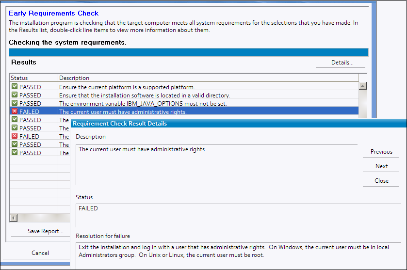
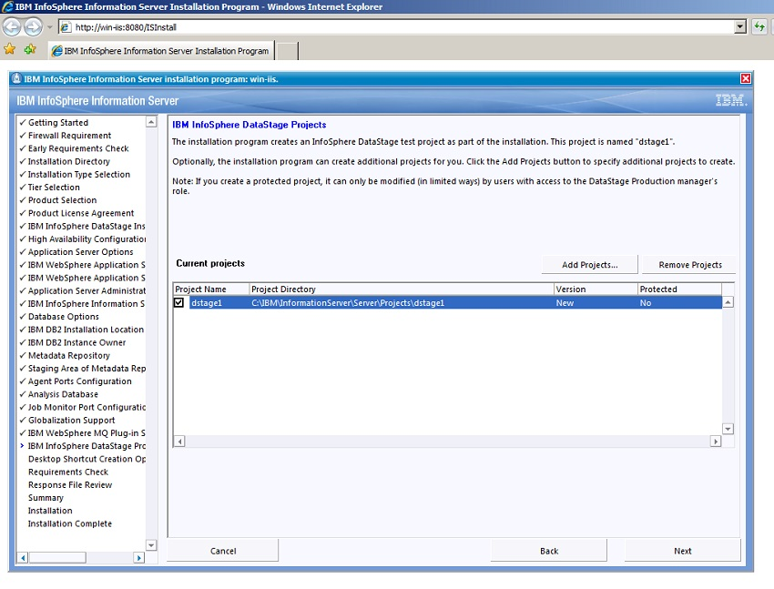

Install InfoSphere Information Server 8.7 on Linux
IBM InfoSphere Information Server(IIS) is one of IBM data intergration platform. It includes a couple of componets:
- DataSage - ETL tools
- QualityStage - data quality
- Business Glossary - business term definition and managment
- Matedata, Information Analyzer, etc.
Creating a response file
To access all services in IIS are based on the hostname or IP address. Here is used to hostname which is defined in the file hosts. Making sure hostname properly, you can access host via hostname.
# cat /etc/hosts
192.168.156.101 iis87 iis87.lab
If you use graphic mode IIS installation, you will skip creating response file because the installation mode is interactive to building a response file. If you do CLI mode installation, you may follow the blow:
-
Copy a sample file from directory
Media_location/is-suite/samples/responses, and then chose one of them that corresponding OS and database for repository. Here isUnixDB2.txt, due to installing DB2 as the IIS's repository Database. -
Modify the response file with corresponded parameters. Following is a response file sample
suite.installLocation=/opt/IBM/InformationServer
LIC_AGREEMENT=ACCEPT # Accept license
# IIS depolyment architecture, here has DB, APP Server, and Engine in the server
suite.tier[database.tier].selected=true
suite.tier[app.server.tier].selected=true
suite.tier[engine.tier].selected=true
# if option is true, that product will be installed
product[BusinessGlossary].selected=true
product[BusinessGlossaryAnywhere].selected=true
product[datastage].selected=true
product[FastTrack].selected=true
product[IMAM].selected=true
product[InformationAnalyzer].selected=true
product[ISALite].selected=true
product[ISTools].selected=true
product[metadata.server].selected=true
product[MetadataWorkbench].selected=true
product[qualitystage].selected=true
product[Recovery].selected=true
product[WISD].selected=true
# depended componets that will be installed if its value is ture
DataStage=true
DataStage.BalOp=false
DataStage.MVS=false
DataStage.SAS=false
DataStage.Server=false
allow.customize.was.profile.ports=true
app.server.password=<password>
app.server.type=was # Websphere as the application server
app.server.user=wasadmin
db2.admin.group.name=dasadm1
# related to repostory's database, here is DB2. it can be other DBMS.
db2.admin.home.directory=/home/dasusr1 # sys user id
db2.admin.user.name=dasusr1 # DB2 admin id
db2.admin.user.password=<password>
db2.fenced.group.name=db2fadm1
db2.fenced.home.directory=/home/db2fenc1
db2.fenced.user.name=db2fenc1
db2.fenced.user.password=<password>
db2.install.location=/opt/IBM/db2
db2.instance.group=db2iadm1
db2.instance.home.directory=/home/db2inst1
db2.instance.name=db2inst1 # DB2 instance name
db2.instance.user.name=db2inst1
db2.instance.user.password=<password>
db2.port.number=50000 # DB2 access port number
ds.admin.uid=dsadm
For the password, you may be 2 optional types encrypted or plain. The encrypted password is be generated by install_media/tools/genkey.sh.
For example, if password is 'abc'
./genkey.sh -generate abc # Generate encrypted characters
{xor}WvszPqcFq58= # encrypted charaters
And then, the encrypted characters is put in the response file password.
app.server.password={xor}WvszPqcFq58= // in response file
If using plain characters password, the password characters is get in response file directly.
App.server.password=abc
Check installation environment
Go to in the directory is_suite, and execute following:
./setup -reportOnly -rsp response_file_name -verbose
Run the setup command with the -reportOnly parameter to perform the prerequisite check.
The installation program runs through a prerequisites check phase. If all prerequisite checks pass,
installation continues until the installation process finishes. If one or more prerequisite checks fail,
the installation displays errors and stops. The prerequisites check report contains messages like the following line:
FAIL - The DB2 installation directory C:\IBM\SQLLIB must be empty.
If a prerequisites check fails, correct the problem and restart the installation.
Be careful, there could be a hide directory in the directory /opt/.ibm if you had unsuccessful IIS installation or uninstallation before. Looks like this /opt/.ibm/.nif/.nifregistry in Linux. You can simply delete the file.
The log files are in /tmp/ibm_is_logs/, find the failed item by Error ID or Warning ID. For example, there is a warning message:
WARNING: CDIPR2021I: Ensure that required kernel parameter kernel.shmall is optimal. You can find the warning detail in log file.
cat /temp/ibm_is_logs ISInstall2013.07.27.13.21.36.log | grep CDIPR2021I
If need changing Linux Kernel parameters, it's following:
To modify these kernel parameters, we need to edit the /etc/sysctl.conf file. If this file does not exist, it should be created. The following lines are examples of what should be placed into the file:
kernel.sem=250 256000 32 1024
#Example shmmax for a 64-bit system
kernel.shmmax=1073741824
#Example shmall for 90 percent of 16 GB memory
kernel.shmall=3774873
kernel.msgmax=65535kernel.msgmnb=65535
Run sysctl -p to load in sysctl settings from the default file /etc/sysctl.conf.
`# sysctl -p`
To make the changes effective after every reboot, boot.sysctl needs to be active on SUSE Linux. On Red Hat, the rc.sysinit initialization script will read the /etc/sysctl.conf file automatically.
Starting the installation with a response file
You can run a silent installation of IIS by using a response file rather than by using the installation wizard. Follow the progress of the installation by monitoring the installation log file.
Procedure
-
Optional: Modify the
EXCEPTION_POLICYenvironment variable. This variable determines how errors are processed that might occur when running in silent mode.
LinuxCsh, tcsh-setenv EXCEPTION_POLICY=n,bash-Export EXCEPTION_POLICY=n. n can be any of the following values:
1 - Prompt user to try again on error (default behavior)
2 - Continue on error
Important: Continuing with an installation after an error occurs could result in a nonoperational installation, or might cause existing installed software to stop functioning. Use this option only if directed by IBM® Support.
3 - Exit on error -
Log in to Linux as the
rootuser -
In a shell window, or terminal, on the Linux and keep the window or terminal open during the entire installation process. If you use
ssh, make sure that the session doesn't shut down or timeout the duration of tht installation. -
run
bash.shexport IBM_JAVA_OPTIONS=orunsetenv IBM_JAVA_OPTIONSincsh, tcsh. To clear any Java options that maight be set. -
On Linux: If the target installation directory for IIS, WebSphere Application Server(WAS), or DB2 is an NFS file system, run the following command to ensure that the lock daemon is running.
ps -ef | grep -i lockdIf the lock daemon is not running, need to start the daemon services. -
Run
./setup -rsp response_file_name -verboseto start the installation program. Theresponse_file_namemay include the path and filename of the response file.
Graphical mode Installing IIS
You can also install IIS by using the wizard.
When you first start the installation program, it presents a non-graphical interface. The program starts a self-contained web server on the computer. You can then start a web browser on the computer or on a remote computer and access the graphical interface.
After you enter your settings in the wizard pages, the program stores your settings in a response file. If you run the installation program again, you can load your settings from this file into the program instead of entering them again.
Procedure
- Change to the
is-suitedirectory within the directory that contains the installation media. - Run the installation program
./setup [-verbose]
The -verbose option is optional. The option causes the installation program to display log messages to the console and also write them to the log file. If the -verbose option is not specified, log messages are written to the log file only.
Several messages are displayed. The program then displays a message about how to access the installation wizard:
======> Enter one of the following URLs to your web browser to begin the
installation process:
http://localhost:8080/ISInstallorhttps://localhost:8443/ISInstall - Open a web browser on the computer or on a remote computer, and navigate to one of the addresses that is listed in the messages from starting the installation program.
Installation program encounters an error
After you start the installation process, the installation program might encounter an error that requires your action to resolve.
Symptoms The installation program encounters an error and an Installation Exception window appears.
Resolving the problem, complete these steps in the Installation Exception window:
- Click Retry failed action and then click OK.
- If the problem recurs, review the last statements in the log file to determine what caused the error. See Log files for more information.
a. Investigate and fix the error.
b. Click Retry failed action and then click OK. - If the issue can be resolved, fix the issue, and then click Retry.
Refer to IBM IIS Installation
Install InfoSphere Information Server on Windows 2008 Server
Installing IIS on Windows is easy than on Linux because Windows does not like Linux that need many dependency packages working for IIS and the installation process is in graphical mode on Windows. However, on Windows you still need to install a few software for IIS.
Prepare Windows environment
- Check hostname
- Make sure the log in user which has user Administrator privilege or it is in the group Administrators
Before installing IIS, you may install followings
- last Service Package(SP)
- language Compiler Microsoft Visual C++ (or Studio .Net) 2008 Express Edition, or 2010 Express Edition,
- Microsoft DotNet 4.0 or later,
- MSXML4.0
Run setup for requirement check

Install IIS
- Run cmd.exe as administrator (cmd.exe user:adminiastrator)
- Run .\is_suite\setup.exe
- Follow instruction on interactive installation
- Select installation products and tires on the server
IIS installation process

Configuring permissions and groups (Windows Server 2008)
Configuring permissions and groups (Windows Server 2008)
You must complete these tasks to configure users and groups to access to Information Server. This configuration is required only for the engine tier computer. This configuration is only applicable to the users of the operating system where the engine tier components are installed.
Procedure
- Log in to Microsoft Windows Server 2008 as an administrator.
-
Create a
group.- Click
Start > Control Panel > Administrative Tools > Computer Management. - In the
Computer Management window, expandSystem Tools > Local Users and Groups > Groups. - Click
Action > New Group. - In the
New Groupwindow, typeDataStageas the name for the group, clickCreate, and clickClose.
- Click
-
Configure users and the DataStage group to log in.
- Click
Start > Control Panel > Administrative Tools > Local Security Policy. - In the
Local Security Settingswindow, expandLocal Policies > User Rights Assignmentto display the policies. - In the
Local Securitywindow, click theAllow log on Locallypolicy and clickActions > Properties. - In the
Allow log on Locally Propertieswindow, clickAdd User or Group. - In the
Select Users or Groupswindow, clickLocations, click the name of your local computer, and clickOK. - In the
Select Users or Groupswindow, clickAdvancedand clickFind Now. - In the search results, select
Authenticated Users and DataStageand clickOKthree times to save the results and to return to theLocal Securitywindow. - In the
Local Securitywindow, click theLog on as a Batch Jobpolicy and clickActions > Properties. - In the Log on as a
Batch Jobwindow, clickAdd User or Group. - In the Select
Users or Groupswindow, clickLocations, click the name of your local computer, and clickOK. - In the Select
Users or Groupswindow, clickAdvanced, and then clickFind Now. - In the search results, select
DataStageand clickOKthree times to save the results and to return to theLocal Securitywindow. - Close the
Local Security Policywindow.
- Click
-
Add users to the group.
- From the Computer Management window, click
Groups. - Click the name of the group that you want to add users to (DataStage).
- Click
Action > Add to Group. - In the
User Propertieswindow, clickAdd. - In the
Select Users or Groupswindow, clickLocation. - Click the name of your local computer, and then click
OK. - In the Select
Users window, clickAdvanced. - In the window that opens, click
Find Now. - Click the names of users that you want to include in the group, and click
OK. At a minimum, include all authenticated users. - Click
OKthree times to return to theComputer Managementwindow. - Close the
Computer Managementwindow.
- From the Computer Management window, click
-
Set permissions for the following folders:
C:\IBM\InformationServer\Server
C:\Program Files\MKS Toolkit\fifos
C:\Windows\%TEMP%
C:\tmp
Complete the following steps for each of the listed folders.- Select the folder and click
File > Properties. - In the
Propertieswindow, click theSecuritytab, and clickEdit. - In the
Permissionswindow, clickAdd. - In the
Select Users or Groupswindow, clickLocations. - Click the name of the local computer, and click
OK. - In the
Select Users or Groups window, clickAdvanced. - In the window that opens, click
Find Now. - Click the name of the group that you want to set permissions for (DataStage).
- Click
OKtwice. - In the
Permissions list, select to allowModify,Read & execute,List folder contents,Read, andWrite Permissions. ClickOK. - If you receive a message that asks you to confirm the changes, click
Applychanges to this folder, subfolders and files.
- Select the folder and click
Refer to IBM IIS Installation